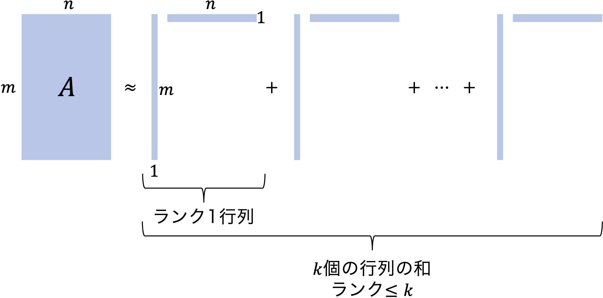

行列の特異値分解
今回の講義では，行列の特異値分解を利用して画像を圧縮するプログラムを書いていきます． なお，画像の圧縮は日常生活のあらゆる場面で利用されていますが，実際には今回紹介する方法よりも洗練された方法が使われています．
いきなりカラー画像を扱うのは大変なので，とりあえず，グレースケール画像を考えましょう． 各ピクセルに，\(0 \text{(黒)} \sim1 \text{(白)}\) の値が対応しているとします（通常は \(0\) から \(255\) までの整数値で表現しますが，ここでは簡単のため，\(0\) から \(1\) の任意の実数を許容することとします． さて，一つのグレースケール画像を行列 \( A\in \mathbb{R}^{m\times n} \) に見立てると，画像のファイルサイズは当然 \( mn\) に比例しますが，以前の講義で見積もったように，単純に行列の成分を保存するならば，（スマートフォンで撮影した写真では）数十 MB の記憶容量が必要となります．
行列の低ランク近似（low-rank approximation）
圧縮に向けた一つの考え方として，下の図のように，\( m\times n\) の行列 \(A\) を，幾つかの『「縦ベクトルと横ベクトルの積」の和』として近似的に表現することを考えましょう．

ここで，縦ベクトルと横ベクトルの積の形の行列の階数は \(1\) ですから，もし \(k\) 個の和で近似するならば，近似した行列の階数は \(k\) 以下となります． 近似の良し悪しの指標は後で考えることにして，もし，\(k\) 個の和で良い近似になっているのであれば，
- \(m\) 次元（縦）ベクトルを \(k\) 本
- \(n\) 次元（横）ベクトルを \(k\) 本
保持すればよいことになります． 従って，\( mn\) 個の数を保持する必要はなくなり，\( k(m+n)\) 個の数を保持すれば十分です． 例えば，\(m=n=1000\) のとき，\(k=50\) 程度で良い近似が達成されるのであれば， \begin{equation} \frac{k(m+n)}{mn} = 0.1 \end{equation} より，ファイルサイズを \(90\%\) 削減できることが分かります． このようなアイデアを，工学では（イメージ通り）「圧縮」といい，数学では「行列の低ランク近似」といいます．
行列の特異値分解（singular value decomposition）
良い近似を達成するための方法は，どのような尺度で近似の良さを測るかに依存します． 今回の講義では，「Frobenius（フロベニウス）ノルム」を使って近似の良し悪しを測ることを考えるのですが，その詳細は一旦後回しにして，ここでは今後の議論に必要となる「行列の特異値分解」についてその基本的な考え方を紹介します．
定理
ランク \(r\) の実行列 \( A\in\mathbb{R}^{m\times n}\) は，適当な \(m\) 次直交行列 \(V\) と \(n\) 次直交行列 \(U\) を用いて \begin{equation} \tag{1} \label{eq:svd} A = U \Sigma V \end{equation} の形に分解される．ここで，\(\Sigma\) は \begin{equation} \Sigma = \begin{pmatrix} \begin{matrix} \sigma_1 & & \\ & \ddots & \\ & & \sigma_r \end{matrix} & \Large{O_{r,n-r}} \\ \Large{O_{m-r,r}} & \Large{O_{m-r,n-r}} \end{pmatrix} \quad (\sigma_1 \geq \sigma_2\geq \cdots \geq \sigma_r > 0) \end{equation} の形の \(m\times n\) 型行列である（左上のブロックは対角行列）．分解 \eqref{eq:svd} を 特異値分解 (singular value decomposition; SVD) といいます．
この定理の証明は，少し発展的な線形代数の教科書を参照していただくことにして，直ちに分かる固有値との関係について紹介します．上の定理を認めると \begin{align} A^\top A &= (U\Sigma V)^\top (U\Sigma V) = V^\top \Sigma^\top \Sigma V, \cr A A^\top &= (U\Sigma V) (U\Sigma V)^\top = U \Sigma \Sigma ^\top U^\top \end{align} となりますから（\(\Sigma^\top \Sigma \) や \(\Sigma \Sigma^\top \) は対角行列であることに注意），
- \(A\) の特異値は，\(A^\top A\) の非零固有値の平方根と一致し，\(V\) の行ベクトルは \(A^\top A\) の固有ベクトル
- \(A\) の特異値は，\(A A^\top \) の非零固有値の平方根と一致し，\(U\) の列ベクトルは \(A A^\top\) の固有ベクトル
であることが分かります．
さて，直交行列 \(U\) と \(V\) を \begin{equation} U = [u_1, \dots, u_m], \quad V = [v_1,\dots, v_n]^\top \end{equation} と表すことにすれば（例えば \(u_i\) は \(U\) の第 \(i\) 列のベクトル），\eqref{eq:svd} は \begin{equation} A = \underbrace{\sigma_1 u_1 v_1^\top + \sigma_2 u_2 v_2^\top \cdots + \sigma_k u_k v_k^\top}_{=:A_k } + \cdots + \sigma_r u_r v_r^\top \end{equation} と表せますが，\(\sigma_1 \geq \sigma_2\geq \cdots \geq \sigma_r > 0\) であることから，「ランク \(k\) の行列の中で，\(A_k\) が \(A\) に対するベストな近似ではないか？」という予想ができます．
行列の Frobenius（フロベニウス）ノルム
線形代数で習ったように，「ノルム」は「ベクトル（線形）空間」における距離を測るものです． 行列の集合もベクトル空間であり，様々なノルムが知られていますが，この講義では Frobenius ノルムを考えます．
定義
実行列 \( A\in\mathbb{R}^{m\times n}\) に対して，以下で定義される \( \| \cdot \|_F : \mathbb{R}^{m\times n}\to\mathbb{R} \) を Frobeniusノルム という： \begin{equation} \| A \|_F = \sqrt{\sum_{i=1}^m \sum_{j=1}^n a_{ij}^2}. \end{equation}すなわち，Frobenius ノルムとは，行列の各成分の二乗和の平方根です． このノルムは，ユークリッドノルムの行列への自然な拡張と思えなくもないですが，ユークリッドノルムから誘導される別の行列ノルムが知られているので，興味のある学生は少し発展的な線形代数の教科書を参照してみるとよいでしょう．
さて，近似の話に戻ります．次のような定式化を考えてみます．
低ランク近似問題の定式化
\begin{equation} \tag{2} \label{eq:form} \min_{\mathrm{rank} (\tilde{A}) \leq k} \| A - \tilde{A} \| _F \end{equation} 読み方：ランクが \(k\) 以下の行列の中で，Frobeniusノルムの意味で \(A\) との距離が最小になるものを求めよ．この問題の解は次のように得られます．
定理（Eckart–Young–Mirsky）
最適化問題 \eqref{eq:form} の最適解は \(A_k\).証明の前に，Frobenius ノルムの性質を 2 つみておきましょう．
性質 1： \begin{equation} \| A \| _F^2 = \mathrm{tr} (AA^\top) = \mathrm{tr} (A^\top A) . \end{equation} 但し，\( \mathrm{tr}(X)\) は行列 \(X\) の対角成分の和とします．
\( \because \) （1 つ目の等号のみ示します；2 つ目も同様に示せます）
\begin{equation} (AA^\top)_{ii} = {\sum_{j=1}^n a_{ij}^2.} \end{equation} より \begin{equation} \mathrm{tr} (AA^\top) = \sum_{i=1}^m \sum_{j=1}^n a_{ij}^2 = \| A\| _F^2. \end{equation}
性質 2： 任意の直交行列 \(U\in\mathbb{R}^{m\times m}\) と \(V\in\mathbb{R}^{n\times n}\) に対して \begin{equation} \| UAV\| _F = \|A\| _F. \end{equation}
\( \because \) （ここでは，\( \|UA\|_F = \|A \|_F\) のみ示します；\(V\) 側も同様の方針で示せます）性質 1 より， \begin{equation} \|UA\|_F^2 = \mathrm{tr} ((UA)^\top UA) = \mathrm{tr} (A^\top \underbrace{U^\top U}_{=I}A) = \mathrm{tr} (A^\top A) = \| A\| _F^2. \end{equation}
それでは，直前の定理を証明しましょう．
性質 1 より \begin{equation} \tag{3} \label{eq:A-X} \| A - X \|_F ^2 = \mathrm{tr} \big((A-X)(A-X)^\top \big) \end{equation} ですので，以下， ランクが \(k\) 以下の行列 \(X\) のうち， \eqref{eq:A-X} を最小にするものが \(A_k\) であることを示します． \(U\in\mathbb{R}^{m\times m}\) および \(V\in\mathbb{R}^{n\times n}\) を行列 \(A\) を特異値分解したときにあらわれる直交行列とします． このとき以下が成り立ちます． \begin{alignat}{2} \|A-X\|_F^2 &= \mathrm{tr} \big( UU^\top (A-X) VV^\top (A-X)^\top \big) & & \quad \because UU^\top = I, \ VV^\top = I \cr &= \mathrm{tr} \big( U^\top (A-X) VV^\top (A-X)^\top U\big) & & \quad \because \text{性質 2} \cr &= \mathrm{tr} \big[ \big(U^\top (A-X) V \big) \big(U^\top (A-X) V\big)^\top \big] & & \cr &= \mathrm{tr} \big( (\Sigma - \underbrace{U^\top X V}_{=:G}) (\Sigma - U^\top X V)^\top \big) & & \quad \because U^\top A V = \Sigma \cr &= \sum_{i=1}^r (\sigma_i - g_{ii})^2 + \sum_{i=r+1}^m g_{ii}^2 + \sum_{i\neq j} g_{ij}^2. & & \end{alignat} これを最小にするには， \begin{alignat}{2} g_{ii} &= \sigma_i, & & \quad i = 1,\dots,k, \cr g_{ij} &= 0, & & \quad \text{otherwise} \end{alignat} とすればよく，このとき \(X = A_k\) です（実際にはもっと精密に議論する必要があり，証明の完全版はCLEで配布します）． なお， \begin{equation} \| A - A_k\|_F^2 = \sum_{i=k+1}^r \sigma_i^2 \end{equation} であることも明らかでしょう．
特異値分解に基づく画像圧縮
それでは，特異値分解に基づく画像圧縮のプログラムをみていきましょう． まず，アルゴリズムに関する注意を一つ：特異値分解を行うためにはアルゴリズムが必要ですが，（全て説明するには 1,2 回の講義では時間が足りないので）Julia の LinearAlgebra パッケージに実装されている svd 関数を使うこととします． その他の注意等については，サンプルプログラム中に書いてあります． 皆さんには，好きな画像を使って，\(k \) を大きくしていくと，元の画像に近づいていく様子を視覚的に体感してもらいたいと思います． また，特異値の分布もプロットすることで，目で見て分かる近似具合と整合しているか考えてみてください．
課題
サンプルプログラムの中の画像を色々と変更し（各自の写真でもOKです），\( k \) の値を変えたときの画像を表示させ，圧縮のイメージを掴んでください． 課題としては，今回の内容の「感想（や特異値の分布もふまえた考察）」をCLEで提出してください． CLEで提出する際は，基本的には「テキスト情報の入力」欄に文章で書いていただければOKですが，圧縮した画像や元画像を添付して感想・考察を書くことも大いに歓迎します．サンプルファイルはこちら